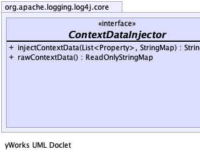
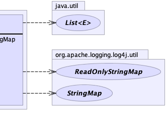

public interface ContextDataInjector
The source of the context data is implementation-specific. The default source for context data is the ThreadContext.
In some asynchronous models, work may be delegated to several threads, while conceptually this work shares the same
context. In such models, storing context data in ThreadLocal variables is not convenient or desirable.
Users can configure the ContextDataInjectorFactory to provide custom ContextDataInjector objects,
in order to initialize log events with context data from any arbitrary context.
When providing a custom ContextDataInjector, be aware that the ContextDataInjectorFactory may be
invoked multiple times and the various components in Log4j that need access to context data may each have their own
instance of ContextDataInjector.
This includes the object(s) that populate log events, but also various lookups and filters that look at
context data to determine whether an event should be logged.
Implementors should take particular note of how the different methods in the interface have different thread-safety guarantees to enable optimal performance.
StringMap,
ReadOnlyStringMap,
ContextDataInjectorFactory,
ThreadContext,
ThreadContextDataInjector|  |  |
| Modifier and Type | Method and Description |
|---|---|
StringMap |
injectContextData(java.util.List<org.apache.logging.log4j.core.config.Property> properties,
StringMap reusable)
Returns a
StringMap object initialized with the specified properties and the appropriate
context data. |
ReadOnlyStringMap |
rawContextData()
Returns a
ReadOnlyStringMap object reflecting the current state of the context. |
StringMap injectContextData(java.util.List<org.apache.logging.log4j.core.config.Property> properties, StringMap reusable)
StringMap object initialized with the specified properties and the appropriate
context data. The returned value may be the specified parameter or a different object.
This method will be called for each log event to initialize its context data and implementors should take care to make this method as performant as possible while preserving at least the following thread-safety guarantee.
Thread-safety note: The returned object can safely be passed off to another thread: future changes in the underlying context data will not be reflected in the returned object.
Example implementation:
public StringMap injectContextData(Listproperties, StringMap reusable) { if (properties == null || properties.isEmpty()) { // assume context data is stored in a copy-on-write data structure that is safe to pass to another thread return (StringMap) rawContextData(); } // first copy configuration properties into the result ThreadContextDataInjector.copyProperties(properties, reusable); // then copy context data key-value pairs (may overwrite configuration properties) reusable.putAll(rawContextData()); return reusable; }
properties - Properties from the log4j configuration to be added to the resulting ReadOnlyStringMap. May be
null or emptyreusable - a StringMap instance that may be reused to avoid creating temporary objectsStringMap instance initialized with the specified properties and the appropriate
context data. The returned value may be the specified parameter or a different object.ThreadContextDataInjector.copyProperties(List, StringMap)ReadOnlyStringMap rawContextData()
ReadOnlyStringMap object reflecting the current state of the context. Configuration properties
are not included in the result.
This method may be called multiple times for each log event by Filters and Lookups and implementors should take care to make this method as performant as possible while preserving at least the following thread-safety guarantee.
Thread-safety note: The returned object can only be safely used in the current thread. Changes in the underlying context may or may not be reflected in the returned object, depending on the context data source and the implementation of this method. It is not safe to pass the returned object to another thread.
ReadOnlyStringMap object reflecting the current state of the context, may not return null